The WM225 and WM325 were the first Workmates manufactured by Black & Decker. They came from the factory in Spennymoor, County Durham and were sold in the UK starting in November 1972.
The WM325 is a dual height model, like all of the best-selling, iconic Workmates that followed. The rarely-seen single-height WM225 is identical to the WM325 except that it does not have fold-out legs, so it is limited to the lower sawhorse height. Black & Decker used a single owner's manual that covered both the WM225 and WM325, which you can find on the Documents page.
As Black & Decker made changes to the WM225 and WM325 they assigned each new version a sequential Type number. I have seen the WM225 marked up through a Type 3. I have tentatively identified four different Types of the WM325.
It is not uncommon to find UK Workmates of this period with certain parts that are not standard for their Type which makes identification of the Type more difficult. This is in contrast with the U.S. Workmates which were much more consistent within each Type.
The WM325 was produced from late 1972 to 1976, based on what I have found in Argos catalogs of the period as well as newspaper ads and articles from the UK. The WM225 was also introduced in late 1972 but I suspect it was discontinued before the WM325 was.
The WM325 Type 3 was sold as a test of the market in 1974 in the United States, so I describe the features of the WM325 in detail in the section "Notable Characteristics" on my page for the 79-001 Type E. That discussion applies to the WM225 and WM325 up through the Type 3. The sections below have a little more information about the UK models, and a full description of the WM325 Type 4.
Black & Decker Workmate WM225 and WM325
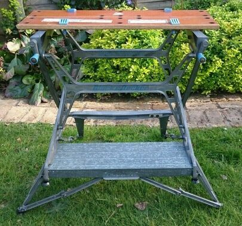
The WM325 Type 3 with galvanized footrestWM225 (single height)
The entire frame of the WM225 (and the first WM325's) is made of cast aluminum. The footrest is the only major frame component not of aluminum, made instead of wood. An interesting feature shared with most of the WM325's is that the ten dog holes in the wooden jaws are lined with steel sleeves.
As you see in the first three photos below, the WM225 has no fold-out legs. The WM225 is quite rare today. I suspect buyers found the low height too limiting so they chose the more versatile WM325 instead. For those who bought the WM225 and realized their mistake, Black & Decker offered the legs as a user-installable option in the WM275 Conversion Kit. The fourth through sixth photos show a WM225 with the conversion kit installed.
I don't know what changes occurred between the WM225 Type 1 and Type 3. All WM225's that I have seen have the wooden footrest, unlike the WM325 which changed to a metal footrest after the Type 1.
As you see in the first three photos below, the WM225 has no fold-out legs. The WM225 is quite rare today. I suspect buyers found the low height too limiting so they chose the more versatile WM325 instead. For those who bought the WM225 and realized their mistake, Black & Decker offered the legs as a user-installable option in the WM275 Conversion Kit. The fourth through sixth photos show a WM225 with the conversion kit installed.
I don't know what changes occurred between the WM225 Type 1 and Type 3. All WM225's that I have seen have the wooden footrest, unlike the WM325 which changed to a metal footrest after the Type 1.

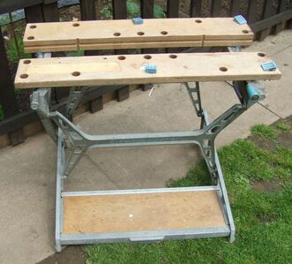
The WM225 is the only "standard-size" Workmate without folding legs

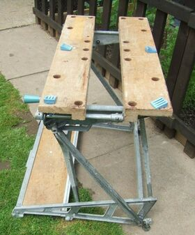
Steel liners in the dog holes are just visible

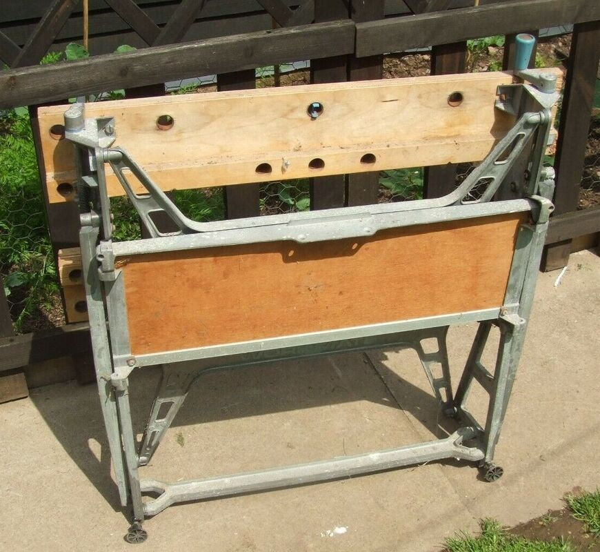
These photos may be the only WM225's you will ever see!

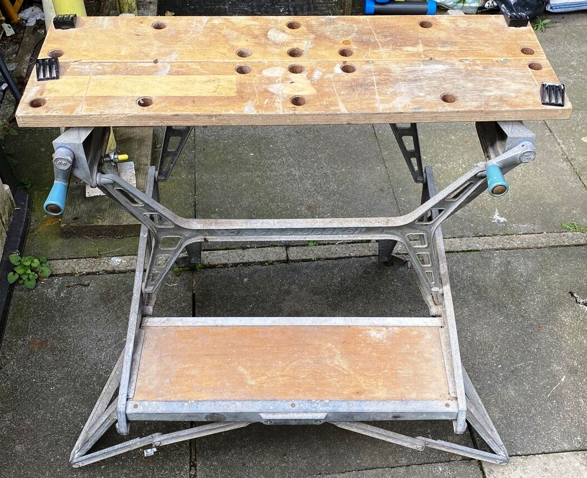
This WM225 with conversion kit looks just like a WM325

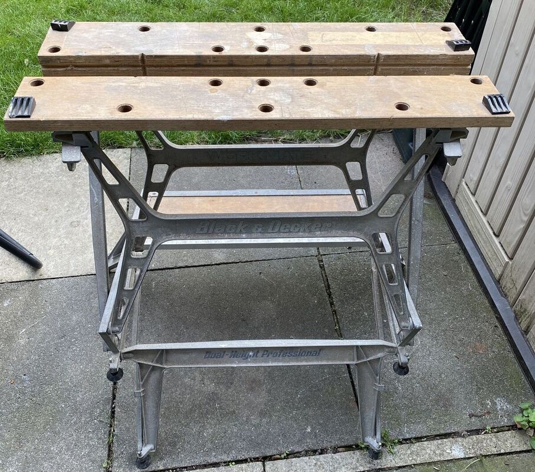
Back view with the conversion kit

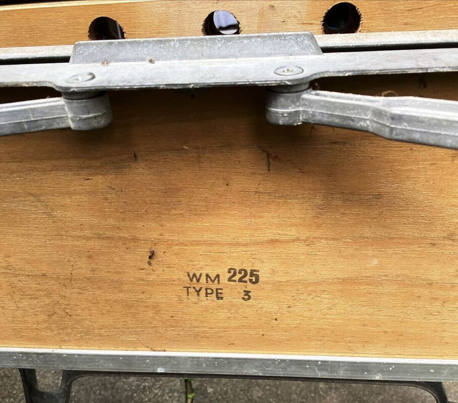
But the stamp confirms it was made as a WM225, not a WM325
WM325 (dual height) Type 1
The WM325 Type 1 is identical to the WM225 except that the fold-out legs give it the more familiar, taller height setting. The frame is made of about 27 pieces of cast aluminum, which has earned it names like “skeleton" frame, “spider-legged", and “lunar module”. The legs are attached by hinged struts with coil springs to assist in unfolding. The jaws are made of a 17-ply 13/16" birch plywood.
The differences among the WM325 Type 1 through 3 are quite minor, limited to just the footrest material, the jaw material/construction, the vise handles, and the painted lettering. All of the Type 1's I have seen have blue plastic vise handles and swivel pegs, along with blue lettering on the H-frames, just like the WM225.
I was mystified for quite some time as to why the WM325 has an unused hole in the lower side frames just below where the side stays attach. The fourth and fifth photos below illustrate why the hole is there.
The differences among the WM325 Type 1 through 3 are quite minor, limited to just the footrest material, the jaw material/construction, the vise handles, and the painted lettering. All of the Type 1's I have seen have blue plastic vise handles and swivel pegs, along with blue lettering on the H-frames, just like the WM225.
I was mystified for quite some time as to why the WM325 has an unused hole in the lower side frames just below where the side stays attach. The fourth and fifth photos below illustrate why the hole is there.


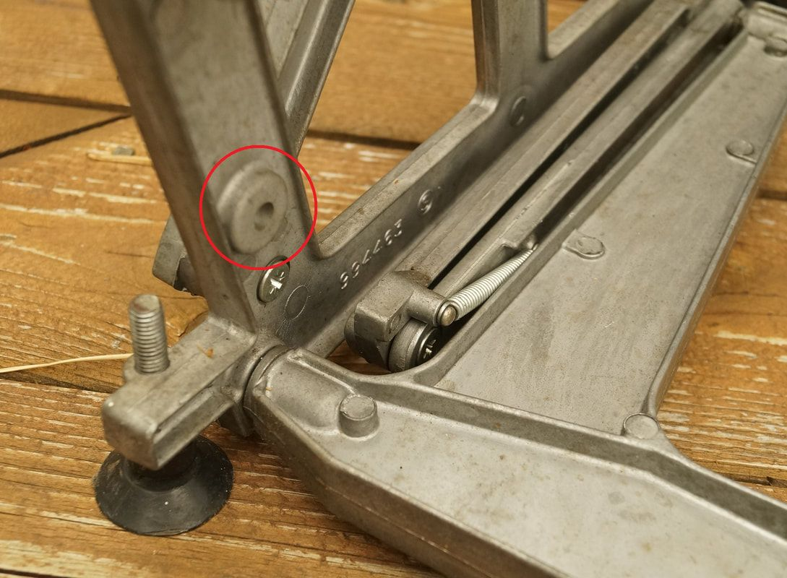
The WM325's rear leg assembly pivots in a hole in the side pieces, but a hole above it is unused.


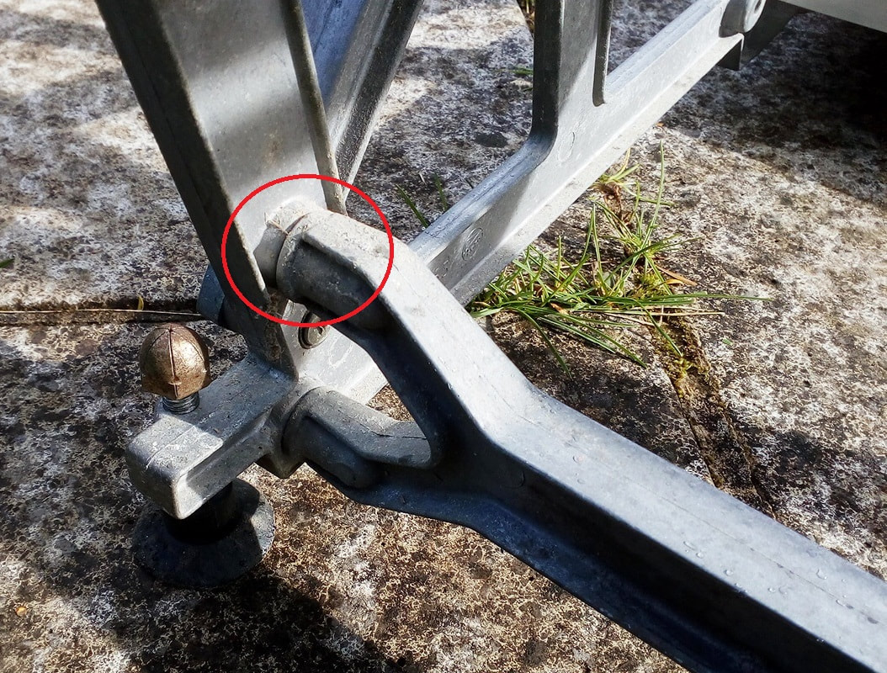
That's because the side pieces are shared with the WM225 (shown here), whose Y-shaped rear cross-member requires two mounting holes.

WM325 Type 2
I believe the only change made to the WM325 Type 2 was the replacement of the wooden footrest with one made of galvanized steel. The Type 2 is quite rare and I don't have any photos of one.
WM325 Type 3
The Type 3 (shown in the top photo on the page and below) is the most common WM325 found today. The Type 3 can sometimes be positively identified by a factory marking of its Type number, as shown in the last two photos below. Without a marking, the main way to recognize most Type 3's is by the thinner jaws of 13-ply 11/16" birch plywood. (Although see the uncommon exception mentioned in the next paragraph.) This and some of the other variations below show Black & Decker experimenting with ways to reduce costs.
There are several variations in the jaws and the trim on the Type 3. Most have the galvanized steel footrest, but some use wood. Type 3's can have black trim pieces and lettering or they can have the same blue used on the Type 1. A few do away with the steel sleeves in the jaws. And a few Type 3's revert to the thicker 17-ply jaws of the Type 1, but without the second layer along the clamping edge. Instead, they have small plywood blocks near the ends of the jaws.
There are several variations in the jaws and the trim on the Type 3. Most have the galvanized steel footrest, but some use wood. Type 3's can have black trim pieces and lettering or they can have the same blue used on the Type 1. A few do away with the steel sleeves in the jaws. And a few Type 3's revert to the thicker 17-ply jaws of the Type 1, but without the second layer along the clamping edge. Instead, they have small plywood blocks near the ends of the jaws.

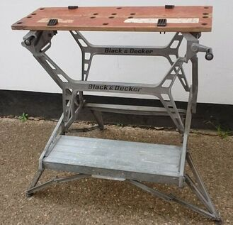
Type 3 with black lettering and handles

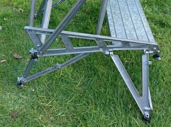
The aluminum legs have a recessed center

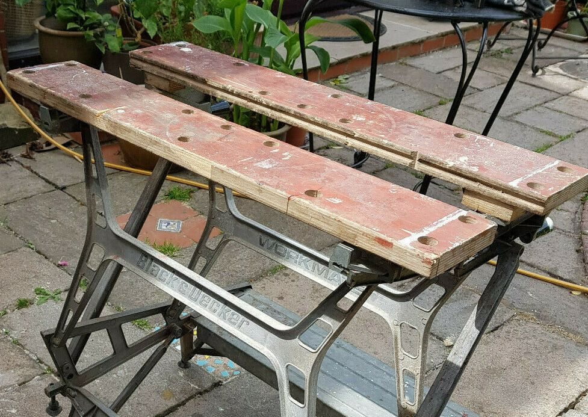
Single-layer 17-ply jaws mounted on small plywood blocks. No steel sleeves.


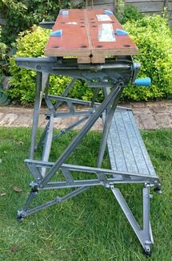
Type 3 with blue lettering and handles


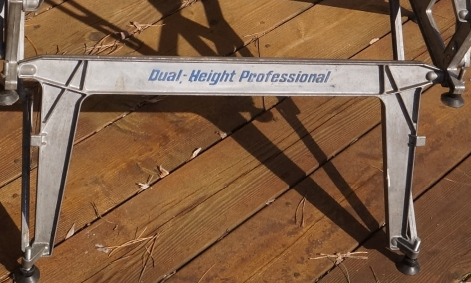
The two rear legs are part of a single assembly

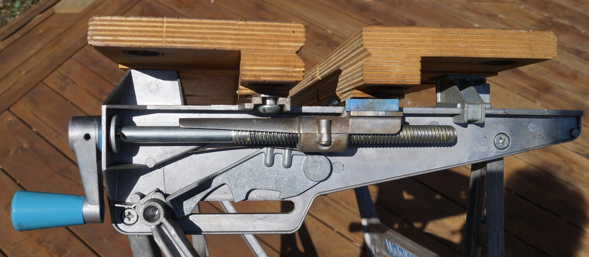
13-ply double-layer jaws

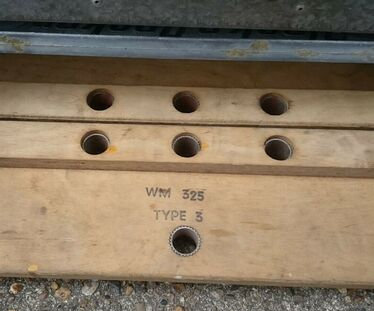
The model and Type number. Also note the steel sleeves.

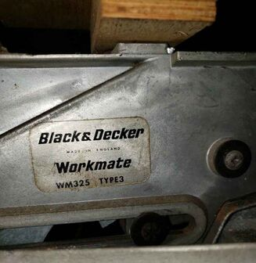
Model and Type number on a label
WM325 "Type 4"
In May 1974 Black & Decker introduced the slightly cheaper Workmate WM525 with steel replacing aluminum for some components. Before long they made changes to the WM325 to incorporate parts of the design of the WM525 Type 5. They changed practically every component on the WM325 except the H-frames and the vise screws. The changes were so extensive that you might have expected them to change the model number, but it continued as a WM325. I am calling this the Type 4, although I have not yet seen one marked with a Type number.
The major change was that all of the frame pieces were changed from aluminum to plated steel. The general design of the front legs was retained, while the one-piece rear leg assembly was replaced by two individual legs. The new rear legs are identical to the front legs, but they fold out to the back instead of to the sides. All of the leg pieces are shaped differently from those on the earlier all-aluminum Types. The less expensive WM525 replaced its cast aluminum legs with ones nearly identical to these, but painted blue, between the Type 4 and Type 5, so I would presume that these changes happened at the same time. The main difference in the legs between the two different models is that the leg struts on the steel legs of the WM525 have no coil springs to help them unfold. Some Type 4's have the frame painted blue.
The push-in feet on the front legs were replaced with screw-mounted ones like those on the rear legs. For sawhorse height, only the right front position has an adjustable screw-in foot. The other three feet for sawhorse height are like those on the WM525, consisting of a short metal rod with a press-on rubber foot that slips over it. Like the earlier push-in feet, these rubber feet are often missing, in which case the Workmate rests on the projecting metal rods.
The upper frame pieces and the latching mechanism were similar to the new mechanism on the WM525, but with additional changes that brought it even closer to its modern counterparts. The lower frame and footrest are nearly identical to what was to come on the 79-001.
The jaws varied quite a bit, although they all have two additional holes at each end for bolts that attach the jaws to blue plastic mounting blocks below. Most have the 10-hole jaws, but some Type 4's have 9-hole 4-corner jaws. Some of them have the steel sleeves in the holes from the earlier Types, but others do not. Some have a natural finish; others have an orange stain. Even the handles for the vise changed, with some having a different shape to the metal center cap and others eliminating the metal center entirely, leaving the handle mostly hollow.
In spite of all the changes, Black & Decker continued to use the same owner's manual.
Compare the photos below to the matching ones above to see the extensive changes.
The major change was that all of the frame pieces were changed from aluminum to plated steel. The general design of the front legs was retained, while the one-piece rear leg assembly was replaced by two individual legs. The new rear legs are identical to the front legs, but they fold out to the back instead of to the sides. All of the leg pieces are shaped differently from those on the earlier all-aluminum Types. The less expensive WM525 replaced its cast aluminum legs with ones nearly identical to these, but painted blue, between the Type 4 and Type 5, so I would presume that these changes happened at the same time. The main difference in the legs between the two different models is that the leg struts on the steel legs of the WM525 have no coil springs to help them unfold. Some Type 4's have the frame painted blue.
The push-in feet on the front legs were replaced with screw-mounted ones like those on the rear legs. For sawhorse height, only the right front position has an adjustable screw-in foot. The other three feet for sawhorse height are like those on the WM525, consisting of a short metal rod with a press-on rubber foot that slips over it. Like the earlier push-in feet, these rubber feet are often missing, in which case the Workmate rests on the projecting metal rods.
The upper frame pieces and the latching mechanism were similar to the new mechanism on the WM525, but with additional changes that brought it even closer to its modern counterparts. The lower frame and footrest are nearly identical to what was to come on the 79-001.
The jaws varied quite a bit, although they all have two additional holes at each end for bolts that attach the jaws to blue plastic mounting blocks below. Most have the 10-hole jaws, but some Type 4's have 9-hole 4-corner jaws. Some of them have the steel sleeves in the holes from the earlier Types, but others do not. Some have a natural finish; others have an orange stain. Even the handles for the vise changed, with some having a different shape to the metal center cap and others eliminating the metal center entirely, leaving the handle mostly hollow.
In spite of all the changes, Black & Decker continued to use the same owner's manual.
Compare the photos below to the matching ones above to see the extensive changes.


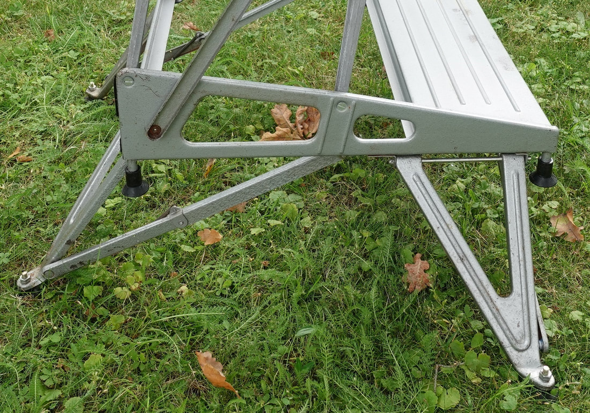
Rubber feet press onto steel rods for sawhorse height; screw-in feet on legs for full height

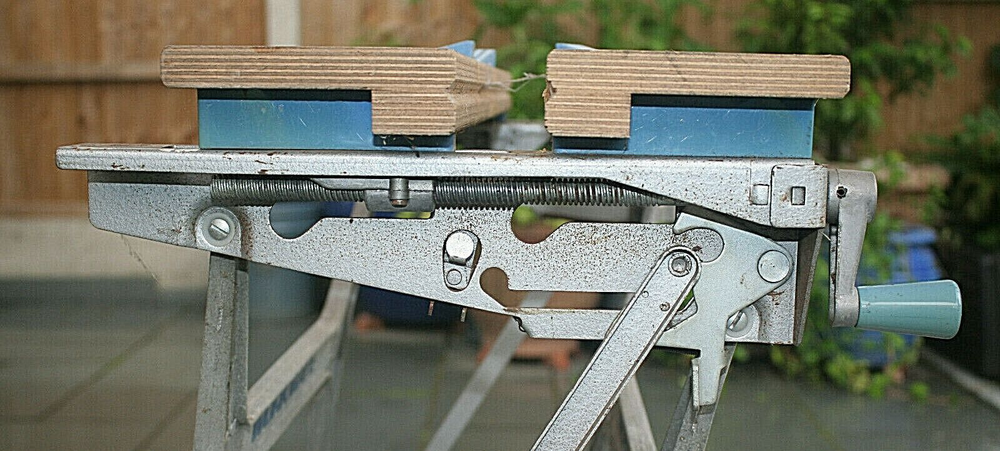
The only piece carried over in the upper frame is the vise screw. Even the handle changed slightly.

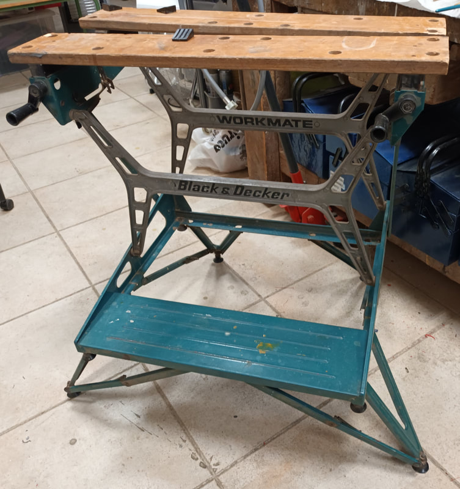
WM325 Type 4 with blue painted frame

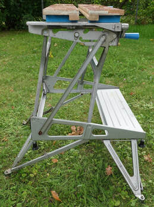
The steel legs have raised ribs down the center

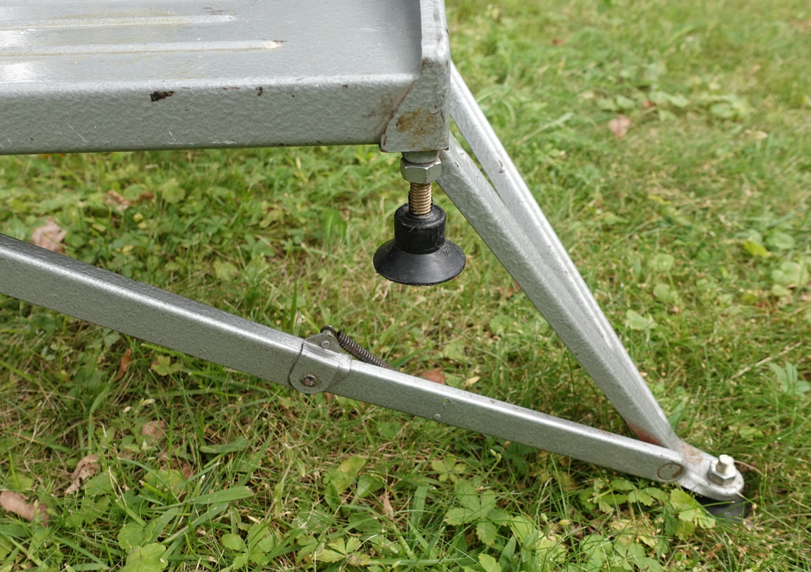
A single adjustable sawhorse-height foot at the right front

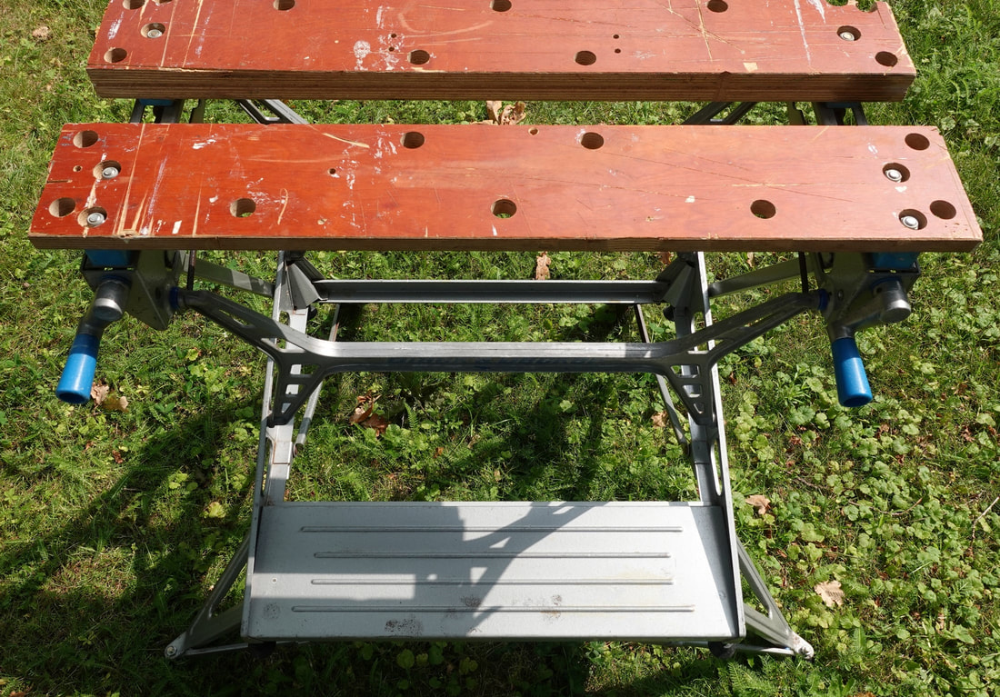
9-hole 4-corner jaws with no steel sleeves. Note the extra holes for mounting bolts.

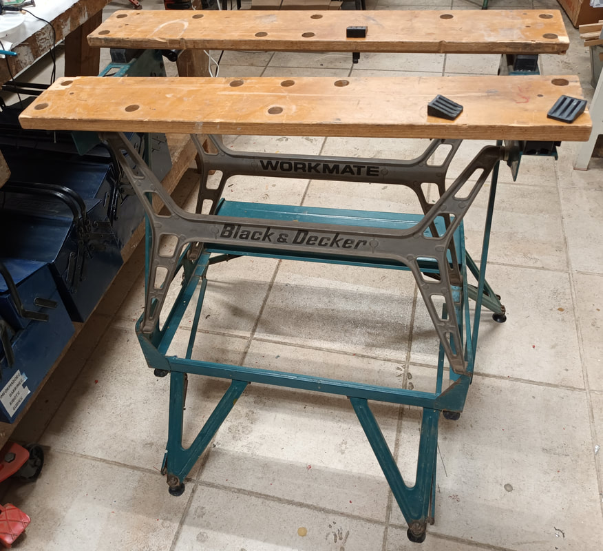
WM325 Type 4 with blue painted frame


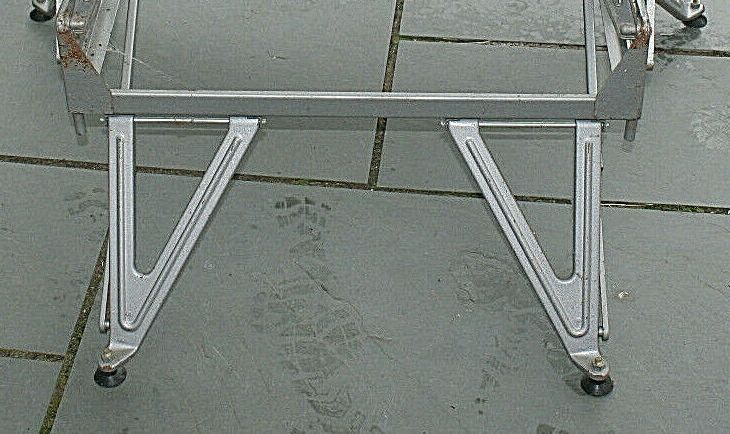
Now with two separate rear legs

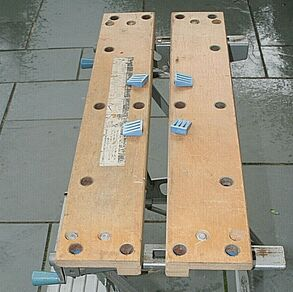
10-hole jaws with steel sleeves

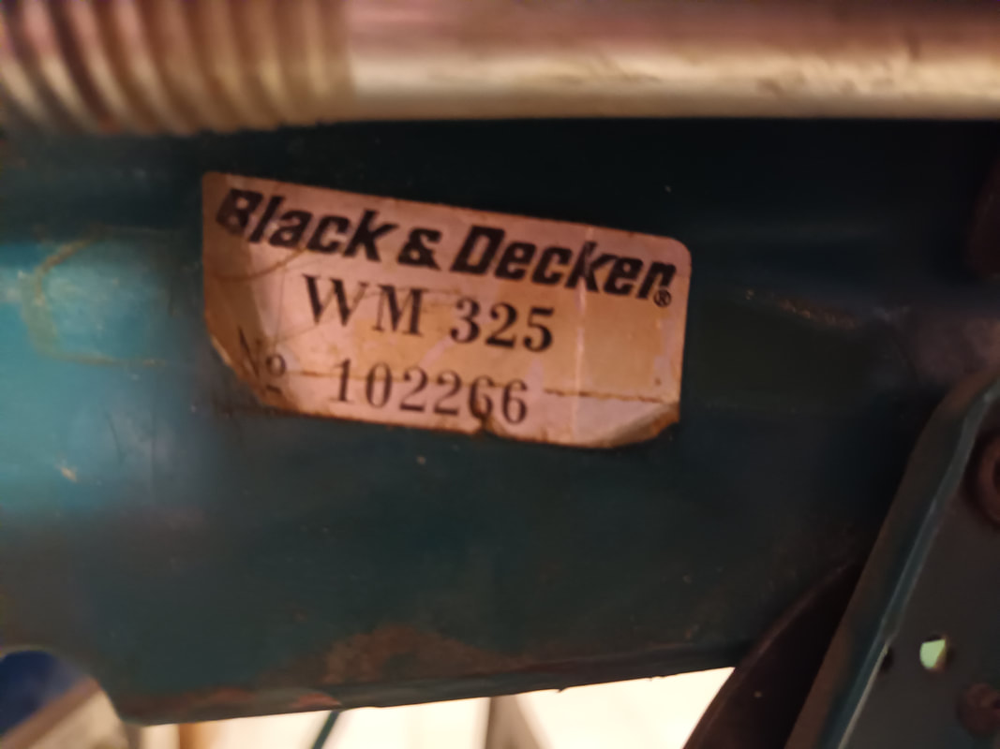
Label on blue WM325 Type 4